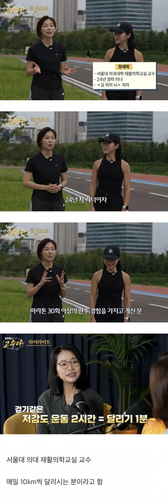

꿀꿀이라 못달린다 -> 수영 추천
꿀꿀이라 수영하기 부끄럽다 -> 천국의 계단 추천
수영이 진짜 유산소류의 최강자인거 같긴 함
단 수영 후 2시간 동안 아무것도 안먹을 수 있다면

먹으면 안되는건 아님
그때 힘들어서 왕창 먹게되는데 수영으로 뺀 칼로리 도루묵
육아휴직 시작하고 이번달부터 가족들과 걷기운동시작했다.
오늘 만보 걷고 존나 뿌듯하게 누워있었는데
이거보고 기분 잡침 ㅋㅋ
그렇다면 1분만 달리면 2시간 걷는 효과를 얻는 거잖아? 1분만 달리면 충분하겠군.
ㅋㅋ 수영 끝나고 선지국 조지고 오지롱
라임이 선진국 수준이여
불가리안백 30분 = 러닝 2시간
천계더 무게제한 있어서 돼지는 못함 ㅋㅋ
아파트계단 ㄱㄱ
엥 거의 150까지 된다던데
쉿
150 넘는분이면 어쩔려고
200시간 걷는게 1시간40분 뛰는거랑 같은거구나
천국계단은 진짜....
일반인을 개좆똥멍청이로 보네..
심폐체력과 대사개선 효과를 말하는 것이래
저강도의 걷기만으로는 심폐체력을 향상시키기 어렵다고 하네
교수는 칼로리 소모량을 말하는 것이 아니야
수영2시간이면 시발 ㅋㅋㅋ
밥먹고 바로 걷기> 식후2시간 3분뛰기
제미나이한테 물어봄
Q. 1시간 걷기가 1분 뛰는거랑 똑같다는 이야기를 들었는데 사실이야?
사실이 아닙니다.
칼로리 소모량과 운동 효과 측면 모두에서 1시간 걷기와 1분 뛰기는 전혀 같지 않습니다.
칼로리 소모량 비교 (체중 70kg 기준 예시)
1시간 걷기 (보통 속도): 약 200 ~ 250 kcal 소모
1분 달리기: 약 10 ~ 15 kcal 소모
1시간 동안 걸어서 소모하는 에너지를 달리기로 채우려면 최소 15~20분 이상 계속 달려야 합니다. 1분 달리기로 소모되는 칼로리는 밥 한 숟가락(약 15~20kcal)에도 못 미치는 수준입니다.
체중 감량 관점에서의 결론
1시간 걷기: 지속적인 지방燃燒(연쇄)와 높은 총 칼로리 소모로 체중 감량에 확실한 도움이 됩니다.
1분 뛰기: 심폐 지구력 자극에는 아주 미미하게 도움이 될 수 있으나, 체중 감량 효과는 거의 없습니다.
따라서 체중 감량이 목적이라면 1시간 동안 꾸준히 걷는 것이 훨씬 비교할 수 없을 만큼 효과적입니다.
달리기 하는 목적에 체중감량만 있는게 아니라서 그런거임
물론 달리기1분이 걷기2시간이랑 같다는건 어느정도 과장이 있는 표현이지만 어쩄든 걷기로는 절대 충족할수없는 효과가 달리기에 있다는걸 강조하기 위해 한 말일거임
심박수 올리는게 ㅈㄴ 중요함 버닝시켜주는게 사기임
달리기도 재획돌리냐고
걸어서는 심박이 안 올라
일반인이 할 수 있을꺼 같진 않지만, 스프린트 1분이면 걷기 2시간보다 특정 부분에서 이점이 크거나, 같다고 평가하는게 말이 안되는 정도는 아닐듯
그럼 전력으로 1분만 달리면 2시간 걷는 효과라는거내? 오늘부터 4시간 걷는효과간다 ㅋㅋㅋㅋ 지방들 다죽었다 ㅋㅋㅋ
댓글에 좋은내용들이 많근
지랄하지마십쇼 사이비 의사놈들
저 위에 용접에 훈수두는 좆문가들 여기에도 많아 ㅋㅋㅋㅋㅋㅋㅋㅋㅋㅋㅋ
수영하면 컵라면 육개장 먹어야지 무슨소리래
ㅋㅋ 걷기만큼 시간낭비하는건 없지
수영 개쩌는운동임 쥰나힘들어
수영을 하다보면 안 힘들어지는 순간이 온다
처음엔 25m 한 번에 가기도 힘들지만
나중에는 1000m를 해도 편안함
수영 조빱인데 수영으로 살 안빠짐 몸매라인은 좋아져도
수영 2시간 하고 어떻게 아무것도 안먹냐
걷기를 20시간하면되네!
왜 수영후 2시간동안 먹으면안되는거야?